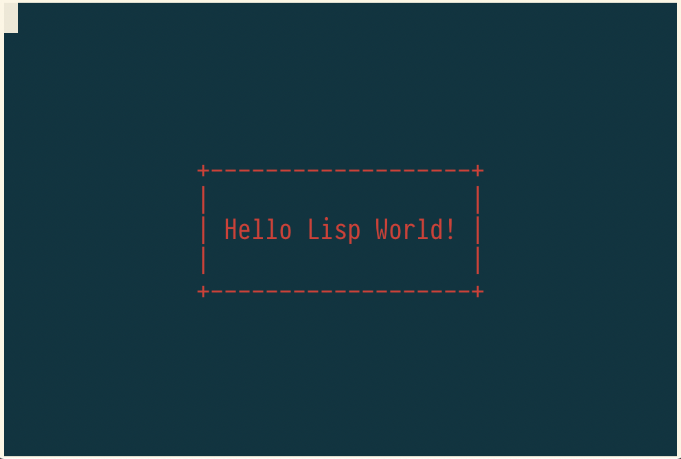

Lisp Project of the Day
cl-ncurses
You can support this project by donating at:


cl-ncurses
| Documentation | 🥺 |
| Docstrings | 🥺 |
| Tests | 🤨 |
| Examples | 🥺 |
| RepositoryActivity | 🥺 |
| CI | 🥺 |
This library is binding to NCurses. It allows for creating windowing interfaces for the console. With NCurses you can print to any place of the screen, change colors and probably do some other awesome things.
I took a few examples from the original NCurses documentation:
https://www.tldp.org/HOWTO/NCURSES-Programming-HOWTO/index.html
It was pretty straightforward to port them to Common Lisp.
The first example just wait for any key and print this key in bold:
(defun main (&rest argv)
(declare (ignorable argv))
(initscr)
(raw)
(keypad *stdscr* 1)
(noecho)
(printw "Type any character to see it in bold:
")
(let ((ch (getch)))
(cond
((= ch 265)
(printw "F1 Key pressed"))
(t
(printw "The pressed key is ")
(attron a_bold)
(printw (format nil "~A~%" (code-char ch)))
(attroff a_bold)))
(refresh)
(getch)
(endwin)))Second example a little bit complex. It uses fetches the size of the terminal and prints "Hello Lisp Word!" in the centre. After that, it draws a border using pseudographics:

Here is the code:
(defun main (&rest argv)
"This example is based on:
https://www.tldp.org/HOWTO/NCURSES-Programming-HOWTO/windows.html"
(declare (ignorable argv))
(initscr)
(start-color)
(init-pair 1
color_red
color_black)
(let ((text "Hello Lisp World!"))
(multiple-value-bind (screen-height screen-width)
(get-maxyx *stdscr*)
(let* ((text-len (length text))
(box-width (+ text-len 4))
(box-height 5)
(box-x (round (/ (- screen-width box-width)
2)))
(box-y (round (/ (- screen-height box-height)
2)))
(plus (char-code #\+))
(h-line (char-code #\-))
(v-line (char-code #\|)))
(attron (color-pair 1))
;; It's time to print a text in the center of the screen:
(mvprintw (+ box-y 2) (+ box-x 2) text)
;; Now we'll draw a border around the box.
;; Horizontal lines:
(mvhline box-y box-x
h-line box-width)
(mvhline (+ box-y (1- box-height)) box-x
h-line box-width)
;; Vertical lines:
(mvvline box-y box-x
v-line box-height)
(mvvline box-y (+ box-x (1- box-width))
v-line box-height)
;; And corners
(mvaddch box-y box-x
plus)
(mvaddch box-y (+ box-x (1- box-width))
plus)
(mvaddch (+ box-y (1- box-height))
(+ box-x (1- box-width))
plus)
(mvaddch (+ box-y (1- box-height)) box-x
plus)
(move 0 0))))
;; Wait for key press
(getch)
(endwin))Full examples are available here:
https://github.com/40ants/lisp-project-of-the-day/tree/master/test/0059
That is it. If you need an interactive interface in the console, use cl-ncurses!
Brought to you by 40Ants under